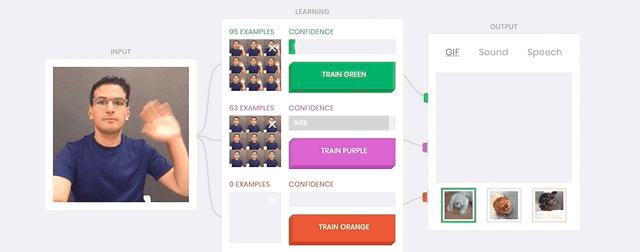

designing with web
Web is everywhere in our lives and most of us are only using the Web passively without understanding how it works. This course will guide you to dive into web technologies through different projects, providing you with professional resources and tools.
Basics
You learn the basics of web languages, discover tools like frameworks or libraries to help you make your firsts projects.
Explorations
You learn about Web Architecture and access different modules to explore following your interests, like AI, databases, APIs…
Project
For the third and last part, you work in little groups tutored by a professional, on a project of your own during 4 weeks.
136 learning hours
36h online - 36h individual - 50h collective - 12h collective with mentoring - 2h evaluation

processing with AI
In this course, you will get a better understanding of Artificial Intelligence. How does it really work? How can you use AI in your projects? You will discover and use the main sub-fields of AI and what are their real-world applications and limitations.
Basics
During the first part, you discover the basics of AI by using pre-trained models of NLP, classification, computer vision, etc.
Explorations
You chose between different modules to dive into AI perspectives and shape a critical understanding of machine learning.
Project
For the third and last part, you work in little groups tutored by a professional, on a project of your own during 4 weeks.
136 learning hours
36h online - 36h individual - 50h collective - 12h collective with mentoring - 2h evaluation

prototyping with fab
In a fast changing world entrepreneurs have to be able to anticipate by doing faster than others. In this course you'll learn to use digital fabrication to go quickly from a concept to a working prototype.
Basics
During this first part, you discover the basics of digital fabrication: 3d modeling & printing, laser cutting, electronics.
Explorations
You make your first opensource project to dive into digital fabrication perspectives and shape a personal understanding.
Project
For the third and last part, you work in little groups tutored by a professional, on a project of your own during 4 weeks.
136 learning hours
36h online - 36h individual - 50h collective - 12h collective with mentoring - 2h evaluation